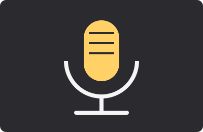
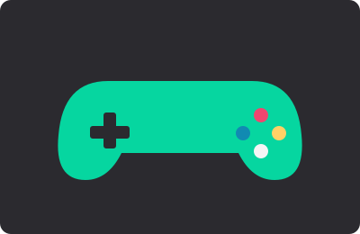
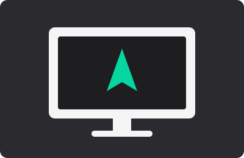

Filmes e séries reúnem histórias para assistir em casa, no cinema ou no celular.
Imagens ilustrativas

Música e podcasts acompanham o dia a dia, com conteúdos para ouvir em qualquer lugar.
Imagens ilustrativas


Games e tecnologia evoluem rápido, unindo diversão, criatividade e inovação.
Imagens ilustrativas